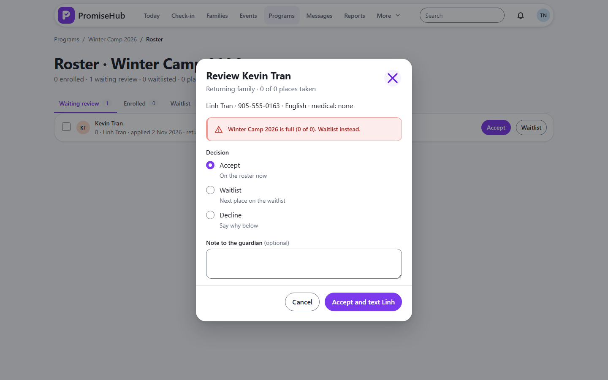
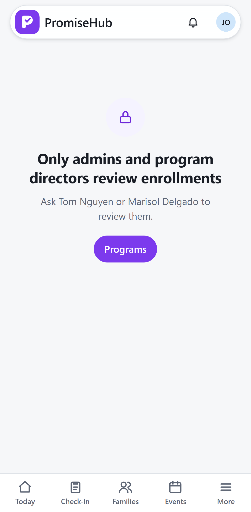

PromiseHub · Video 16
Review enrollment
Accept, waitlist or decline, one by one or together
Accept, waitlist or decline, one by one or together
Ada joins the roster.
Both guardians are texted.


| Case | Answer |
|---|---|
| Accept past capacity | 422, waitlist instead |
| Decline with no reason | 422 |
| Decided twice | 409 |
| Site lead reviews | 403 |
| Another organization / Roster off | 404 |
Next: the guardian's view of the status